Tutorial floor from above

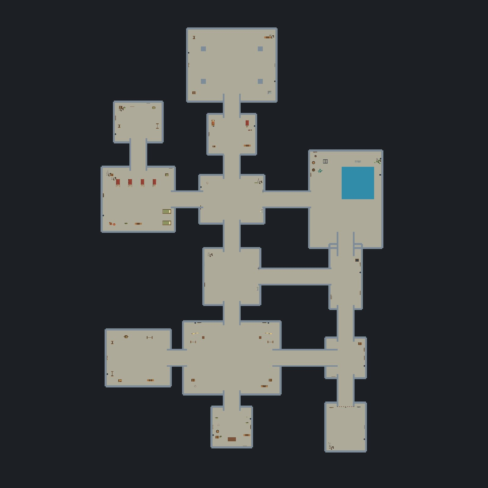

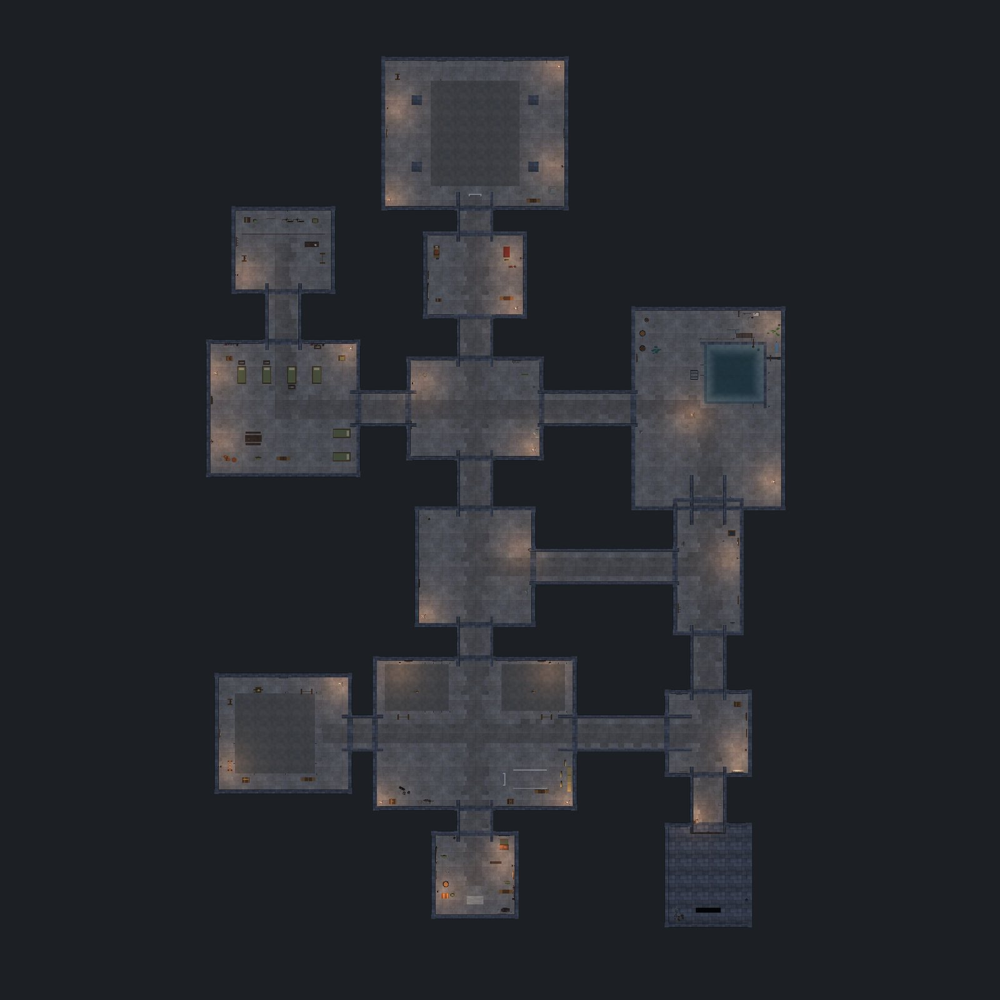
Room by room

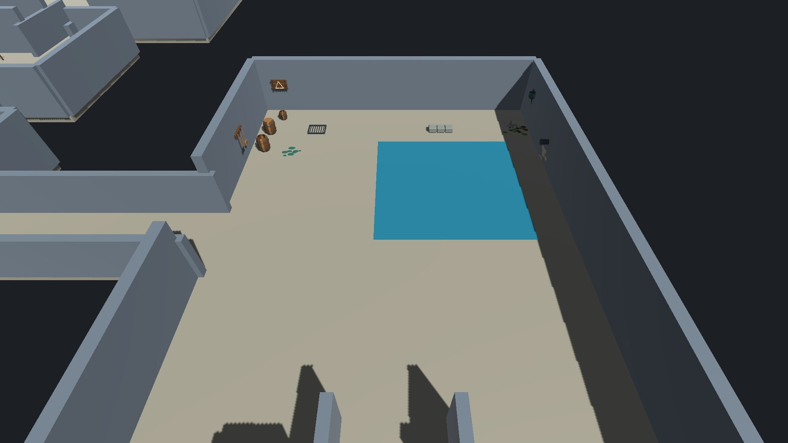


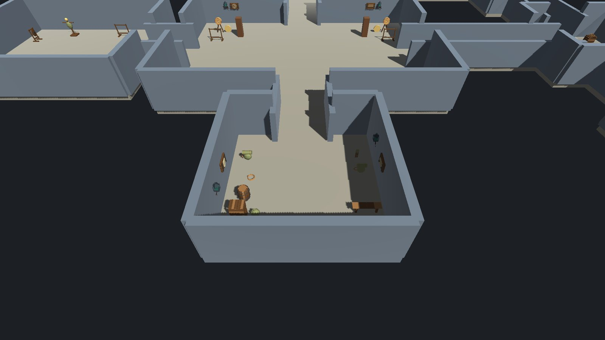

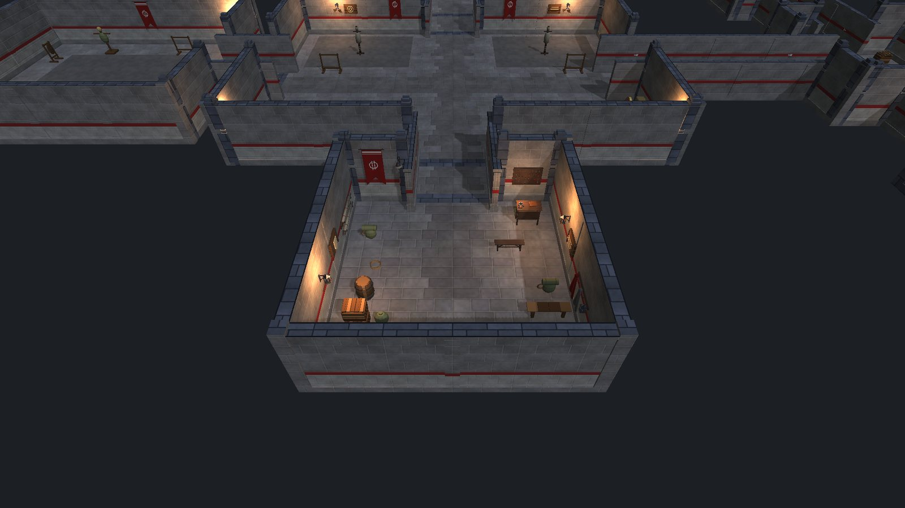

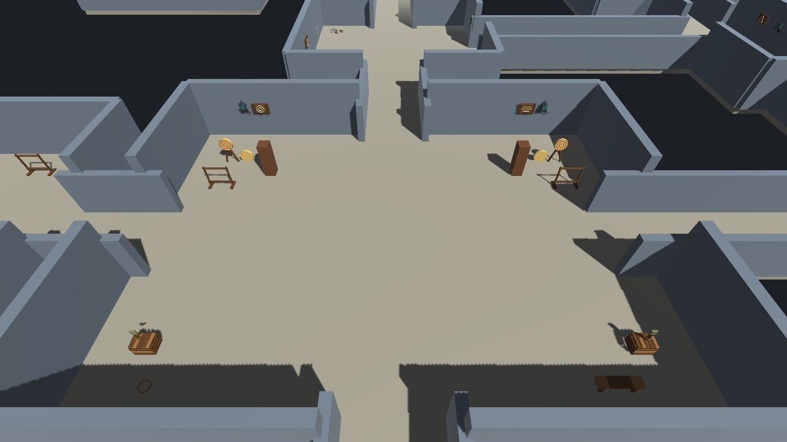

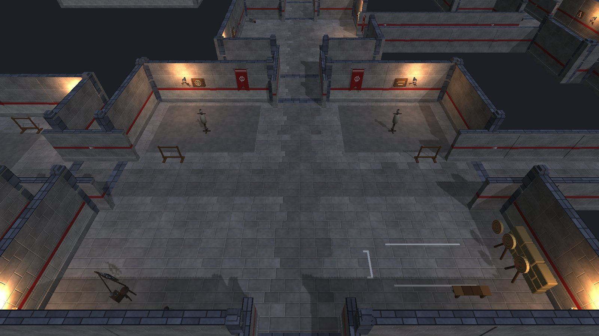

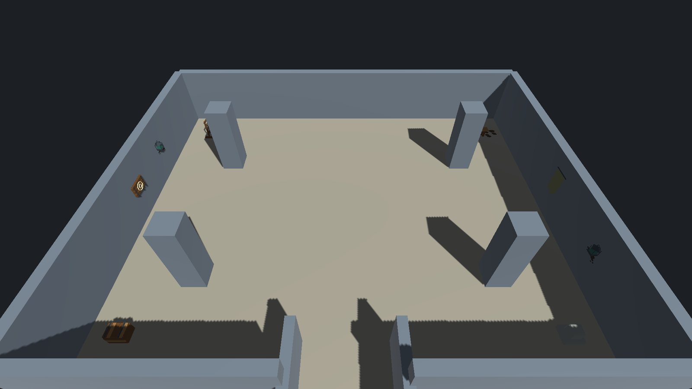

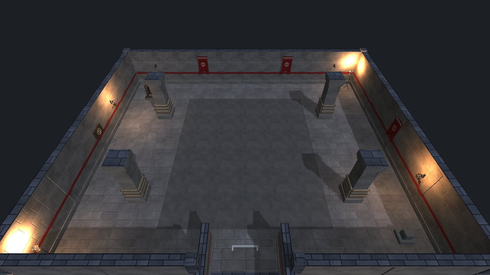
Expedition floor

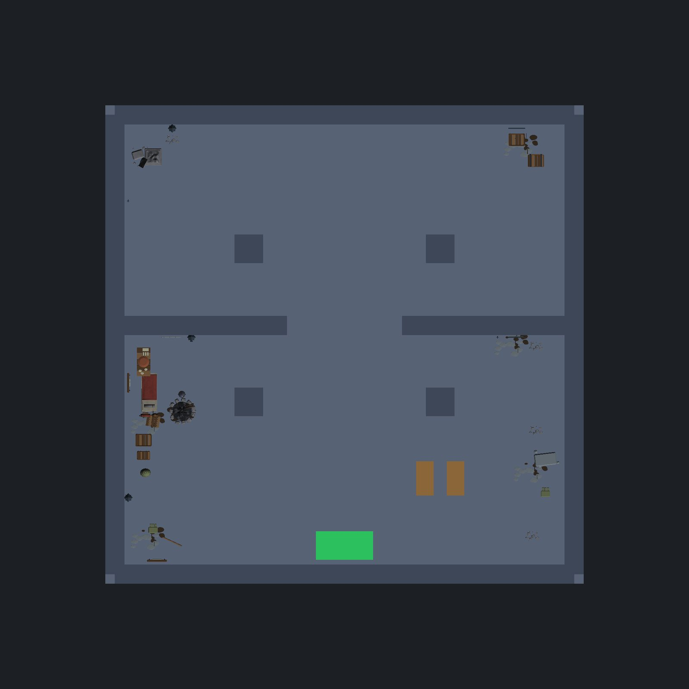

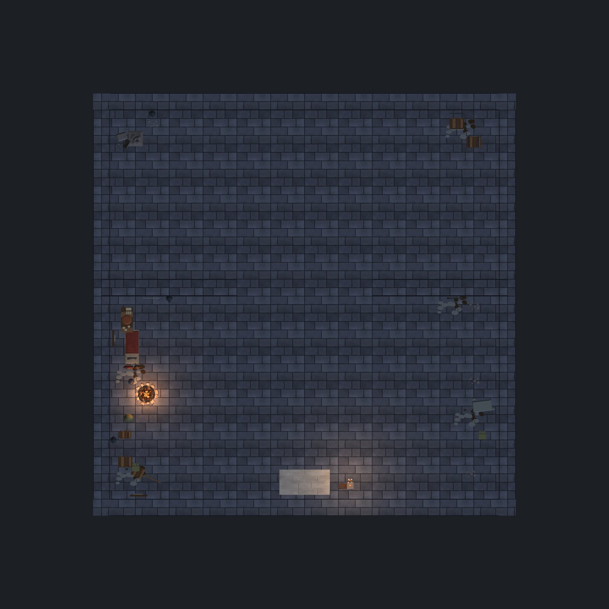

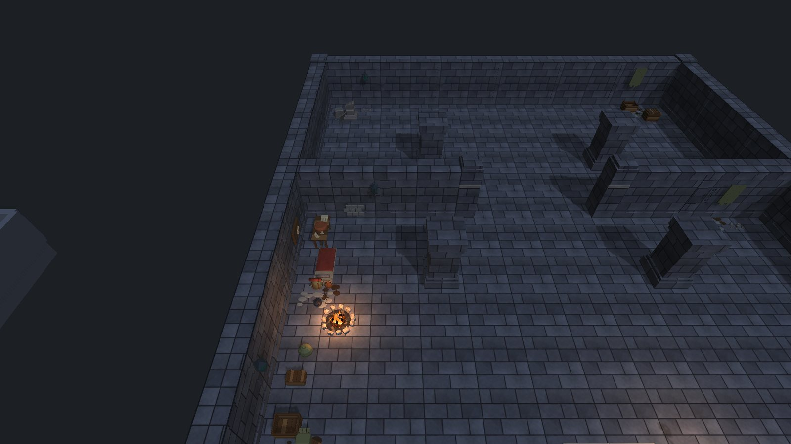
Telegraphs and wading
Enemy attack warnings were checked for readability against the darker floor, and the cistern got a wading effect for one to four walkers.

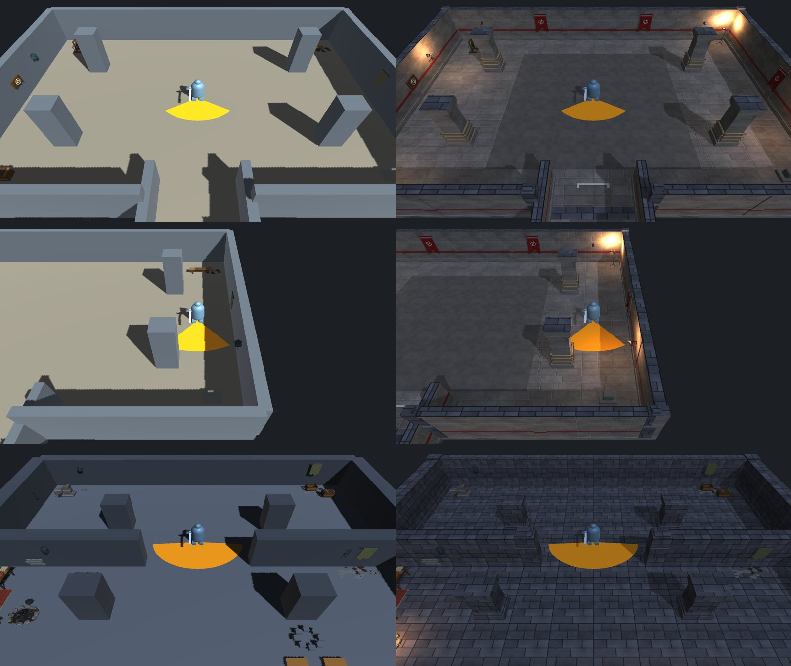

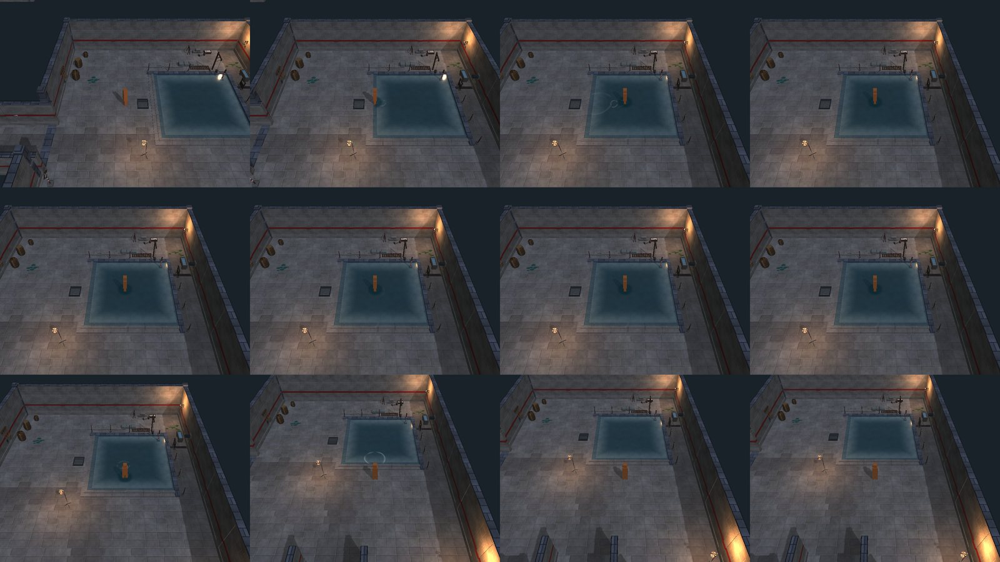